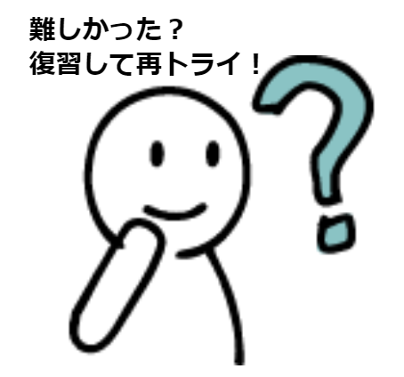

ワークシートやチェックリストの項目の意味を正しく理解しているかどうか確認することができます。是非，ワークシートやチェックリストを使う前にご活用ください。
- クイズは全9問（チェックリストのコア項目に対応した5問＋オプション項目に対応した4問）あります。各問題は2セット用意されており，ランダムでどちらか1問が出題されます。
- 全問正解で合格です。全問正解すると子ヤギ（Kid）が褒めてくれます。
- もちろん何度でも挑戦可能です。最初は0点（どのような内容なのかをざっと確認するだけ）でもOK。間違えた問題はリンク先の解説を読んで，理解を深めましょう。
クイズ1（チェックリストのコア項目に対応した5問）
Q1
次の学習目標の内，学習目標を明確化させるための3要素である「目標行動」，「評価条件」，「合格基準」のすべてを含んでいる学習目標をすべて選びなさい。
→×
「目標行動」＝ OK
「評価条件」＝ NG（評価条件の記載がありません）
「合格基準」＝ NG（合格基準の記載がありません）
例えば，評価条件として「ヘルプを見ずに」，合格基準として「スムーズに（1件あたり1分以内を目安に）行う」などを追加するとより明確な学習目標になります。
改善例）データベースAで検索した文献の書誌情報と本文PDFを文献管理ツールBにインポートし，所定のフォルダに移動することができる。この作業をヘルプを見ずに，スムーズに（1件あたり1分以内を目安に）行うことができる。
→×
「目標行動」＝ NG（「知る」「学ぶ」は目標行動ではありません）
「評価条件」＝ NG（評価条件の記載がありません）
「合格基準」＝ NG（合格基準の記載がありません）
例えば，目標行動として「（特徴や違いについて）説明できる」や「（データベースを）選択できる」に言い換えるとより明確になります。さらに，例えば，評価条件として「マニュアルを見ながら」を追加し，合格基準として「最適な（データベースを選択できる）」（つまり，不適切なデータベースを選択したら不合格ということ）を追加すると3要素を満たしたことになります。
改善例）データベースC，データベースD，データベースEのそれぞれの特徴や違いについて，マニュアルを見ながら説明することができる。さらに，必要に応じて最適なデータベースを選択することができる。
→○
「目標行動」＝ OK
「評価条件」＝ OK
「合格基準」＝ OK（「正確に」や「正しく」が合格基準。事後テストでは満点が合格基準ということ）
学習目標の明確化3要素についての解説は，こちら
Q1
大学生の検索行動を観察した結果，OPACを使う際に，書名や誌名ではなく，章タイトルや論文名で検索してしまう大学1年生が多いことが分かった。そこで，参考文献リストが与えられた際に，書誌事項の内容を正しく読み取り，どの項目がOPACの検索語になり得るのか判断できるようになるような教材を作成したいと考えた。この教材の学習目標を仮に「参考文献リストを見てみよう！～効率的に資料検索を行うために～」とした場合，学習目標の明確化3要素の観点から以下の指摘の内で正しいものをすべて選びなさい。
→○
→×
→×
→○
→×
学習目標の明確化3要素についての解説は，こちら
Q3
「複数の論理演算子を用いた検索式を立てることができる」ことを最終の学習目標として教材を作成する場合，課題分析の1つの方法である階層分析を行う手順として最も適切だと考えられるものを一つ選びなさい。
→○
→×
→×
課題分析についての解説は，こちら
Q4
大学1年生向けに文献管理ツールの使い方に関する教材を作った。この教材の評価を行いたいと考えたとき，学習者検証の原理に基づく形成的評価として最も適切だと考えられるものを一つ選びなさい。
→○
→×
→×
教材作成時の評価と改善についての解説は，こちら
Q4
文献の入手を担当している秘書のための教材を作った。この教材の評価を行いたいと考えたとき，学習者検証の原理に基づく形成的評価として最も適切だと考えられるものを一つ選びなさい。
→○
→×
→×
教材作成時の評価と改善についての解説は，こちら
Q5
情報リテラシー教育の一環として，学生を対象にした情報探索に関する教材を作成した。この教育の評価方法としてカークパトリックの4段階評価を用いた場合，レベル1～レベル3の実施例について，正しいと考えられるものをすべて選びなさい。
→○
→×（前提テスト・事前テスト・事後テストの説明です。）
→×（カークパトリックの4段階評価とは，知識とスキルと態度をそれぞれ評価することではありません。）
→×（レベル1：反応（Reaction），レベル2：学習（Learning），レベル4：結果（Results）に関する説明です。）
カークパトリックの4段階評価についての解説は，こちら
Q5
情報リテラシー教育の一環として，大学1年生を対象にした文献管理ツールの使い方に関する教材を作成した。この教育の評価方法としてカークパトリックの4段階評価を用いた場合，レベル1～レベル3の実施例について，正しいと考えられるものをすべて選びなさい。
→○
→×
→×
→×
カークパトリックの4段階評価についての解説は，こちら

クイズ2（チェックリストのオプション項目に対応した4問）
Q1
次の学習意欲を高めるアイディアの内，ARCSモデルの「注意（Attention）」に関連すると考えられるものをすべて選びなさい。
→○（A-1 知覚的喚起）
→○（A-2 探求心の喚起）
→×（S-3 公平感）
「注意（Attention）」についての解説は，こちら
Q1
次の学習意欲を高めるアイディアの内，ARCSモデルの「注意（Attention）」に関連すると考えられるものをすべて選びなさい。
→○（A-1 知覚的喚起）
→○（A-3 変化性）
→×（R-3 親しみやすさ）
「注意（Attention）」についての解説は，こちら
Q2
次の学習意欲を高めるアイディアの内，ARCSモデルの「関連性（Relevance）」に関連すると考えられるものをすべて選びなさい。
→○（R-2 動機との一致）
→○（R-3 親しみやすさ）
→×（C-1 学習要件）
「関連性（Relevance）」についての解説は，こちら
Q2
次の学習意欲を高めるアイディアの内，ARCSモデルの「関連性（Relevance）」に関連すると考えられるものをすべて選びなさい。
→○（R-1 目的指向性）
→×（C-2 成功の機会）
→×（S-2 外発的な報酬）
「関連性（Relevance）」についての解説は，こちら
Q3
次の学習意欲を高めるアイディアの内，ARCSモデルの「自信（Confidence）」に関連すると考えられるものをすべて選びなさい。
→○（C-2 成功の機会）
→×（A-3 変化性）
→×（R-1 目的指向性）
「自信（Confidence）」についての解説は，こちら
Q3
次の学習意欲を高めるアイディアの内，ARCSモデルの「自信（Confidence）」に関連すると考えられるものをすべて選びなさい。
→○（C-1 学習要件）
→○（C-3 個人的なコントロール）
→×（S-1 内発的な強化）
「自信（Confidence）」についての解説は，こちら
Q4
次の学習意欲を高めるアイディアの内，ARCSモデルの「満足感（Satisfaction）」に関連すると考えられるものをすべて選びなさい。
→○（S-1 内発的な強化）
→○（S-2 外発的な報酬）
→×（C-3 個人的なコントロール）
「満足感（Satisfaction）」についての解説は，こちら
Q4
次の学習意欲を高めるアイディアの内，ARCSモデルの「満足感（Satisfaction）」に関連すると考えられるものをすべて選びなさい。
→○（S-3 公平感）
→×（A-2 探求心の喚起）
→×（R-2 動機との一致）
「満足感（Satisfaction）」についての解説は，こちら